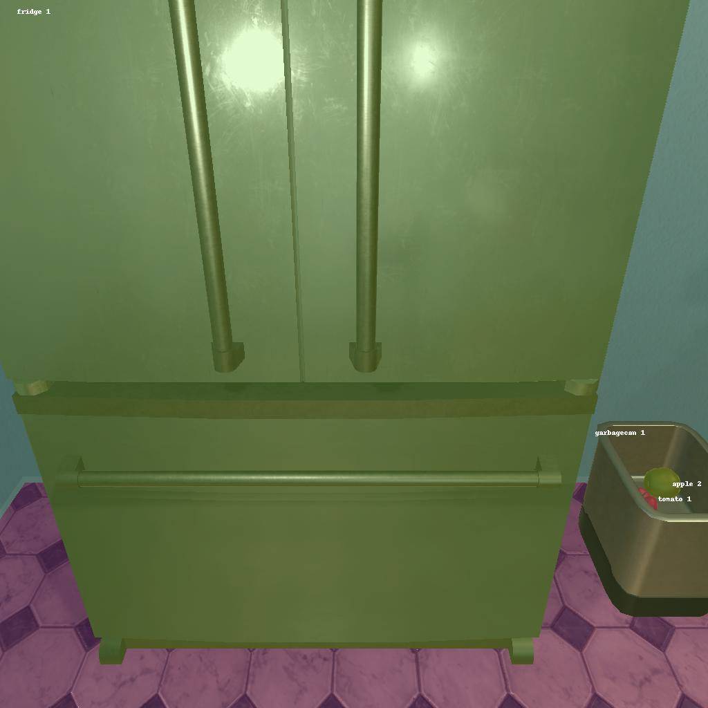

---------------------------------------------------------task: 20---------------------------------------------------------
--------------------------------------------------------------------------------------------------------------------------------------------------------------------
--------------------------------------------------------------------------------------------------------------------------------------------------------------------
Step:--------------------------------------------------------------------------14-------------------------------------------------------------------------------
----------------------------------------
VLM Prompt:
Image1:
**Instruction**
1. Analyze the provided image to identify all visible household objects, focusing on those relevant to the task description "heat some apple and put it in garbagecan."
2. Use the analysis of the image and the task hint "The agent must find an object of the desired type, pick it up, go to a microwave, heat the object with the microwave, then find the correct location to place it, and put it down there. The agent does not need to use the microwave button or open the microwave to heat the object, and the agent just needs to do action that is "heat the object with the microwave"." to answer the question: what is the most reasonable action in the choices for the task description "heat some apple and put it in garbagecan"?
4. Decide and write the answer using the template: The answer is: (i): , where i is the real number. If there is no desired object in the image, search every place based on **Initial Observation** to find the object. And if no one is exactly correct, choose a similar answer.
**Initial Observation**
You are in the middle of a room. Looking quickly around you, you can see cabinet (1-18), countertop (1-4), sink (1), drawer (1-7), sinkbasin (1), coffeemachine (1), microwave (1), garbagecan (1), stoveburner (1-4), toaster (1), fridge (1)
**Answer Choices**
(1): go to cabinet 1
(2): go to cabinet 2
(3): go to countertop 1
(4): go to cabinet 3
(5): go to cabinet 4
(6): go to cabinet 5
(7): go to sink 1
(8): go to cabinet 6
(9): go to drawer 1
(10): go to drawer 2
(11): go to sinkbasin 1
(12): go to cabinet 7
(13): go to cabinet 8
(14): go to coffeemachine 1
(15): go to microwave 1
(16): go to cabinet 9
(17): go to countertop 2
(18): go to cabinet 10
(19): go to drawer 3
(20): go to drawer 4
(21): go to drawer 5
(22): go to cabinet 11
(23): go to cabinet 12
(24): go to cabinet 13
(25): go to cabinet 14
(26): go to stoveburner 1
(27): go to countertop 3
(28): go to stoveburner 2
(29): go to stoveburner 3
(30): go to stoveburner 4
(31): go to drawer 6
(32): go to cabinet 15
(33): go to cabinet 16
(34): go to cabinet 17
(35): go to cabinet 18
(36): go to toaster 1
(37): go to drawer 7
(38): go to countertop 4
(39): go to fridge 1
(40): put apple 2 in/on garbagecan 1
(41): examine garbagecan 1
**Answer**
Let's think step by step by following the instructions.
----------------------------------------
----------------------------------------
Original Response:
Firstly, the task is to "heat some apple and put it in garbagecan." We need to find an apple, which is visible in the image (apple 2). Next, we need to use a microwave to heat the apple. The microwave is mentioned in the **Initial Observation** but not visible in the image, so we can assume it is somewhere in the room. After heating the apple, we need to find the garbagecan to put the apple in, which is also mentioned in the **Initial Observation** and visible in the image (garbagecan 1).
Based on the task description and the hint provided, the most reasonable action from the choices would be to go to the microwave, heat the apple, and then put it in the garbagecan. However, the specific actions of heating the apple with the microwave and putting it in the garbagecan are not listed in the answer choices.
The closest action that matches the task description is (40): put apple 2 in/on garbagecan 1, as it involves placing the apple into the garbagecan, which is part of the task. Although it does not include the heating step, it is the most relevant action based on the provided choices.
The answer is: (40): put apple 2 in/on garbagecan 1.
----------------------------------------
----------------------------------------
>>> Refine Original VLM Response and Get Pure Action: put apple 2 in/on garbagecan 1
----------------------------------------
-----------------------------------------------------------------
Running time: 14.941915035247803 seconds
Total Money: 7.242500000000004
-----------------------------------------------------------------
-----------------------------------------------------------------
Text Observation:You put the apple 2 in/on the garbagecan 1.
-----------------------------------------------------------------
SUCCEED